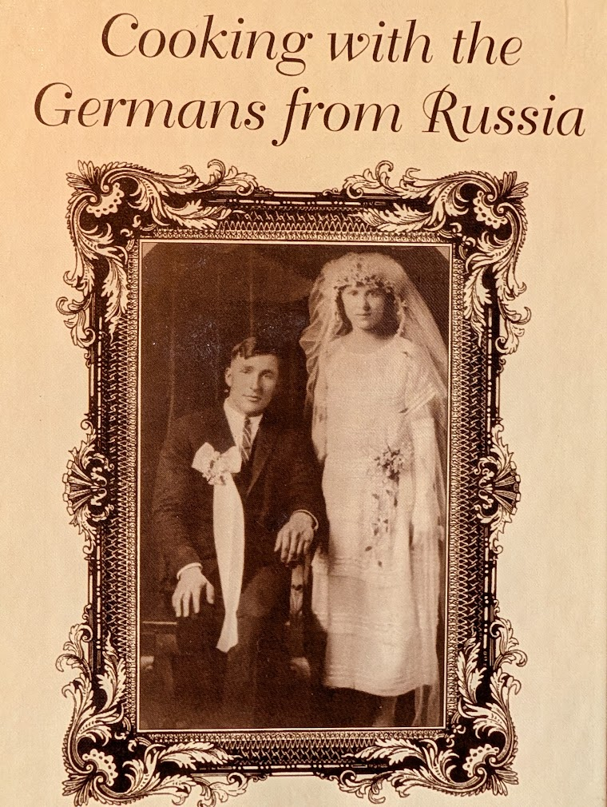
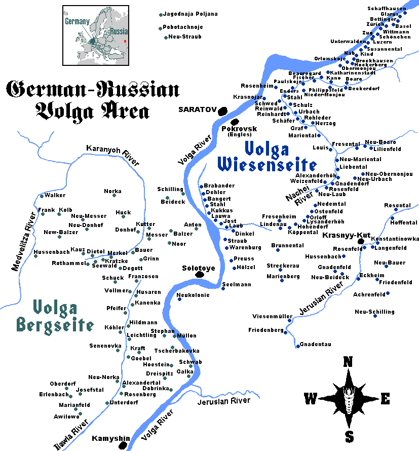

A page made by me as part of The Odin Project's curriculum to learn web development. Here's the GitHub repository for this site and the assignment details for this project.
These are all family recipes. Most recipes are from "Cooking with the Germans from Russia", a cookbook assembled by my family, the descendants of ethnic Germans who left their homes along the Volga River in Russia and settled in western Nebraska in the early 1900's.

Not all of the recipes are Volga German dishes; these are just some family recipes of the American descendants of one Volga German family. Recipes that are "traditional" Volga German fare are indicated as such on this page.

For more information on the Volga Germans, see: